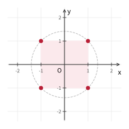
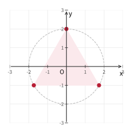
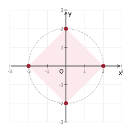

別冊練習問題 3 の解答 複素数のn乗根（z^n=w）
(1) 方程式 \(z^{4}=-4\) を解け。
右辺を極形式にする
\[-4=4\left(\cos\pi+i\sin\pi\right)\]解を極形式で書く
\(z=\sqrt{2}(\cos\phi+i\sin\phi)\) とおくと、ド・モアブルより \(z^{4}=4(\cos4\phi+i\sin4\phi)\)。
\[4\phi=\pi+2k\pi\ \Rightarrow\ \phi=\dfrac{\pi+2k\pi}{4}\quad(k=0,1,\cdots,3)\]\(k\) に値を代入する
\[k=0:\ z=\sqrt{2}\left(\cos\dfrac{\pi}{4}+i\sin\dfrac{\pi}{4}\right)=1 + i\\ k=1:\ z=\sqrt{2}\left(\cos\dfrac{3 \pi}{4}+i\sin\dfrac{3 \pi}{4}\right)=-1 + i\\ k=2:\ z=\sqrt{2}\left(\cos\dfrac{5 \pi}{4}+i\sin\dfrac{5 \pi}{4}\right)=-1 - i\\ k=3:\ z=\sqrt{2}\left(\cos\dfrac{7 \pi}{4}+i\sin\dfrac{7 \pi}{4}\right)=1 - i\]解は複素数平面上で、原点中心・半径 \(\sqrt{2}\) の円に内接する正 \(4\) 角形の頂点。

【答案】
\[z=1 + i,\ -1 + i,\ -1 - i,\ 1 - i\]答
(2) 方程式 \(z^{3}=- 8 i\) を解け。
右辺を極形式にする
\[- 8 i=8\left(\cos\dfrac{3 \pi}{2}+i\sin\dfrac{3 \pi}{2}\right)\]解を極形式で書く
\(z=2(\cos\phi+i\sin\phi)\) とおくと、ド・モアブルより \(z^{3}=8(\cos3\phi+i\sin3\phi)\)。
\[3\phi=\dfrac{3 \pi}{2}+2k\pi\ \Rightarrow\ \phi=\dfrac{\dfrac{3 \pi}{2}+2k\pi}{3}\quad(k=0,1,\cdots,2)\]\(k\) に値を代入する
\[k=0:\ z=2\left(\cos\dfrac{\pi}{2}+i\sin\dfrac{\pi}{2}\right)=2 i\\ k=1:\ z=2\left(\cos\dfrac{7 \pi}{6}+i\sin\dfrac{7 \pi}{6}\right)=- \sqrt{3} - i\\ k=2:\ z=2\left(\cos\dfrac{11 \pi}{6}+i\sin\dfrac{11 \pi}{6}\right)=\sqrt{3} - i\]解は複素数平面上で、原点中心・半径 \(2\) の円に内接する正 \(3\) 角形の頂点。

【答案】
\[z=2 i,\ - \sqrt{3} - i,\ \sqrt{3} - i\]答
(3) 方程式 \(z^{4}=16\) を解け。
右辺を極形式にする
\[16=16\left(\cos0+i\sin0\right)\]解を極形式で書く
\(z=2(\cos\phi+i\sin\phi)\) とおくと、ド・モアブルより \(z^{4}=16(\cos4\phi+i\sin4\phi)\)。
\[4\phi=0+2k\pi\ \Rightarrow\ \phi=\dfrac{0+2k\pi}{4}\quad(k=0,1,\cdots,3)\]\(k\) に値を代入する
\[k=0:\ z=2\left(\cos0+i\sin0\right)=2\\ k=1:\ z=2\left(\cos\dfrac{\pi}{2}+i\sin\dfrac{\pi}{2}\right)=2 i\\ k=2:\ z=2\left(\cos\pi+i\sin\pi\right)=-2\\ k=3:\ z=2\left(\cos\dfrac{3 \pi}{2}+i\sin\dfrac{3 \pi}{2}\right)=- 2 i\]解は複素数平面上で、原点中心・半径 \(2\) の円に内接する正 \(4\) 角形の頂点。

【答案】
\[z=2,\ 2 i,\ -2,\ - 2 i\]答